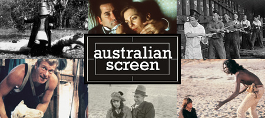

This clip is only available on the australianscreen online website:
Description
This clip shows a group of women from the Merrepen Arts Centre at Nauiya on the Daly River in the Northern Territory collecting merrepen and pandanus leaves for weaving as well as merrepen seeds for dyeing. The clip is narrated by Marrfurra from the Daly River area in her own language with English subtitles.
Educational value
- The Merrepen Arts Aboriginal Corporation was established in 1992. The Merrepen Art Centre grew from a women's centre and is where a core group of about ten women artists work on a regular basis painting, screen-printing, weaving and sculpting. Another 50 women and a few men also produce work for the Centre.
- As shown in this clip, the passing on of traditional knowledge and culture through art to a younger generation continues to the present day. The children are being shown the traditional ways of collecting and using bush plants and seeds for painting. The artists at the Centre use Western art media as well as traditional art forms to communicate cultural knowledge.
- Merrepen (also known as the Livistonia palm) is a plant that is common across northern Australia and the central desert areas. In the Daly River area of the Northern Territory, women strip leaves from the merrepen and boil them with crushed merrepen seeds to dye them. The coloured fibres are dried, made into string then woven to make dilly bags, baskets and mats.
- Pandanus dilly bags are made from the youngest bunches of long V-shaped leaves from the top of pandanus plants. The green leaves are pulled down with a long stick and split down the centre and the prickly edges removed. Thin even strips are split off and dried for weaving. Different types of pandanus are used for fibre crafts throughout mainland Australia and Tasmania.
- Marrfurra introduces herself by her Aboriginal name; however, she is also known as Patricia Marrfurra MacTaggart. Marrfurra has co-written a book on the Aboriginal use of plants in the Daly River area and recorded the Malak Malak language in a dictionary and thesaurus. In 2005 she was awarded an Australian Medal (AM) for her work in preserving this Indigenous knowledge.
- 'Living Country' is part of a documentary series called 'Nganampa Anwernikenhe' ('ours' in the Pitjantjatjara and Arrernte languages). Produced by Central Australia Aboriginal Media Association (CAAMA) Productions based in Alice Springs, the program is recorded in local languages, focuses on local Aboriginal cultural life and aims to preserve traditional Aboriginal knowledge. It is broadcast by Imparja Television across central Australia.